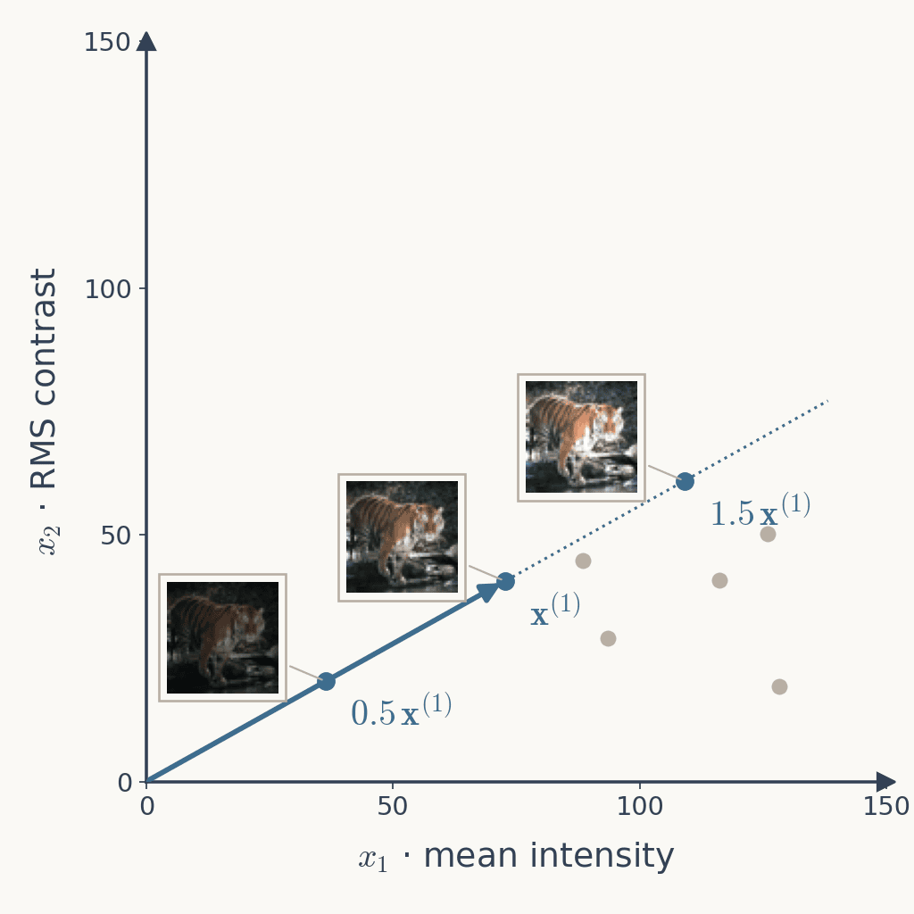
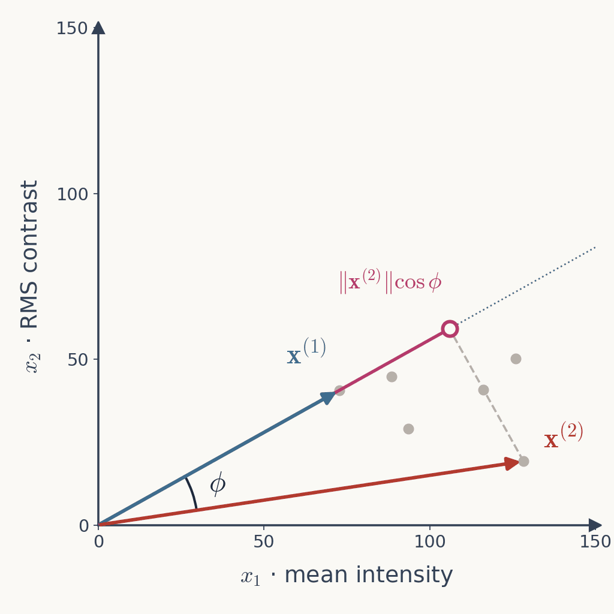
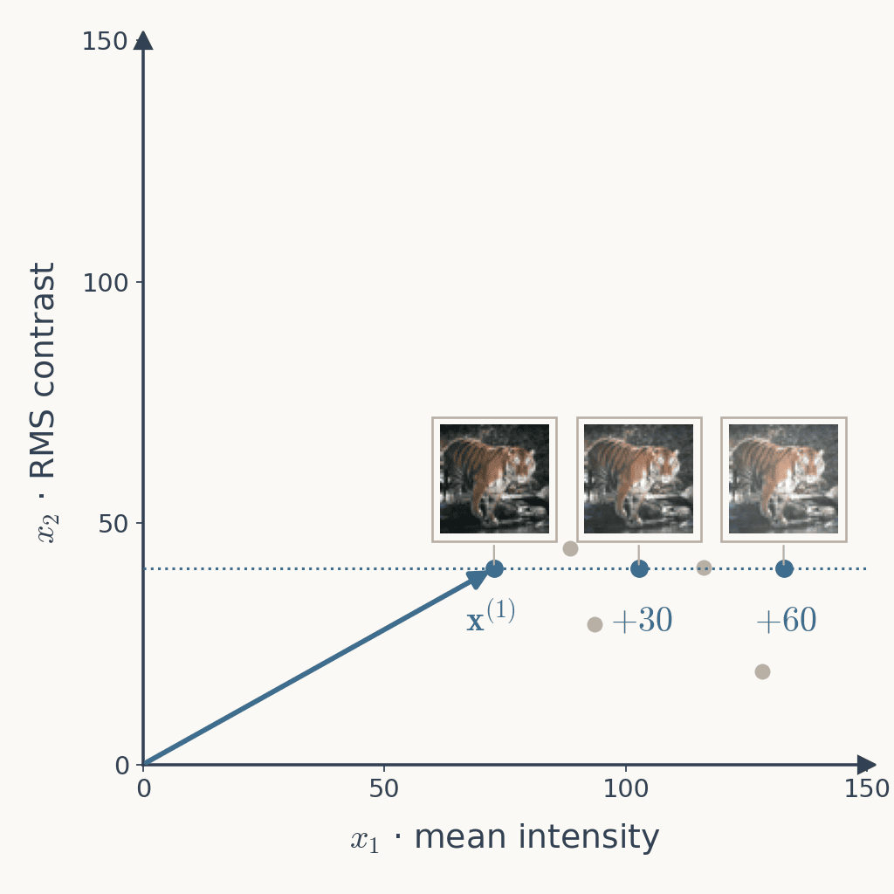
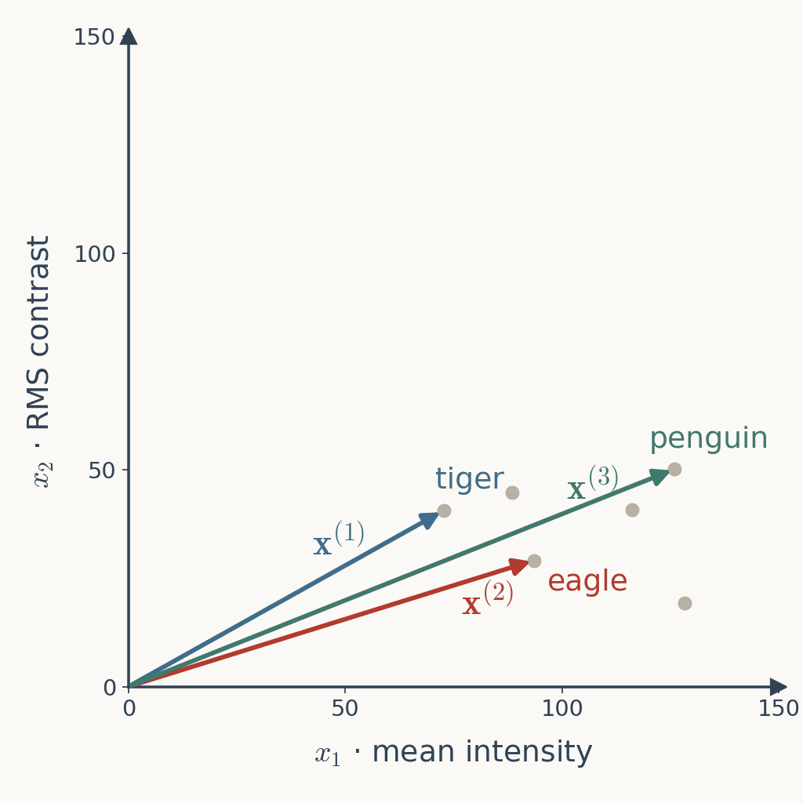
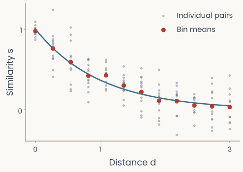

Reader-friendly version of the 72 lecture slides: the lecture content in normal flow, with figure descriptions and data tables where the figure carries data. Open the presentation.
Slide 1
CPSY 1291Computational Methods for Mind, Brain & Behavior
Tuesday: a representation is a list of numbers, a point in a space; pixels, voxels, neurons and network units all give one; averaging over repetitions; the response matrix ; the RDM , one comparison per pair of images.
Today, part 1: what the comparison is. Euclidean distance, cosine, correlation; which of them are distances; what training does to the RDM.
Today, part 2: from the RDM back to a space. Multidimensional scaling.
"Where did the 4,096 numbers go when a row became one square of the RDM?" → one number per pair, computed from both rows: the first slides today
"Is one channel one feature?" → in a convolutional network, yes: a channel is a whole sheet of units that share one set of weights, one feature detector applied at every position; the sheet shows where in the image that feature is present. Each unit is one entry of . (A recording channel is one electrode, another word entirely)
"Are the neural vectors per neuron, averaged over trials?" → yes: one mean rate per neuron per image; Assignment 1 gives you those means
"Why 0–1 rather than 0–255?" → the same 256 levels divided by 255, nothing added or lost. Networks train and run in floating point (GPUs compute in floats; weights, activations and gradients are real numbers, far finer than 8-bit integers), so inputs are scaled to what the weights were trained on
It is, and the pace stays: there is a lot to cover. Hardest now, at the start
The list is short: vectors, dot products, lengths, matrices, the operations every network is built from. Next week adds the eigenvector; Theme 2 the gradient
Use the help. Office hours Wednesday 1 PM, Carney 419: nobody came to talk about linear algebra
☹
Open full-size figure. TA hours are not fixed yet: vote on an Ed thread and we will set them up; I will not ask the TAs to hold hours nobody attends. Notation reference on Canvas
Tuesday's recitation did exactly this in NumPy: vectors as arrays, dot products, norms, cosine and correlation in two lines. Written up: the Bootcamp notes (12 pages: Python, NumPy, vectors and matrices) and the one-page A1 call sheet, both on the course site
Assignment 1 is hard in Part 1 and gets easier. Writing the code yourself is what makes the notation yours
Left: the response matrix, 120 rows, one image each, 4,096 columns of unit activations, drawn as a tall strip of values with two rows highlighted; an arrow labelled with the dissimilarity measure d leads to the right: a 120 by 120 matrix with the single entry for that pair of rows highlighted
Representational dissimilarity matrix (RDM): every pairwise comparison.
Rows and columns: images, here ordered by category. Each entry: one comparison
: the dissimilarity measure. It decides which differences count
What makes it a dissimilarity matrix: zero diagonal (), symmetric (), nonnegative. MDS refuses a non-symmetric matrix; a nonzero diagonal distorts the map. The triangle inequality is a further property, of distances; without it MDS still runs, and the mismatch shows up as stress
A 120 by 120 representational dissimilarity matrix of the Assignment 1 images from the trained ResNet-18 late layer, correlation distance, images ordered by animal category with category boundaries drawn; light blocks along the diagonal show that primates, carnivores and hoofed mammals are more alike within their category than across
Subtraction: the displacement from image 1 (tiger) to image 2 (elephant):
is itself a vector: from the tiger's point to the elephant's.
The same plot with three arrows: x superscript 1 to the tiger's point, x superscript 2 to the elephant's point, and their difference drawn from the tiger's point to the elephant's
Scale every pixel by , , : the same tiger, darker or brighter. The three points lie on one line through the origin
Euclidean distance between the darkest and the brightest: , more than tiger to elephant ()
What the three share is their direction; what differs is their length. Direction = the pattern. Length = overall strength (brightness here; firing rate or activation elsewhere)
A measure of the pattern should compare directions and ignore lengths

The feature-space plot with the tiger at half, normal and one-and-a-half brightness, three thumbnails whose points lie on one dotted line through the origin, the normal tiger marked by the blue vector x superscript 1
is the angle between the two vectors: when they point the same way, when perpendicular
The dot product grows with both lengths and with the alignment
Tiger and elephant: , so ,
is the projection of onto the direction of :

The feature-space plot with the tiger vector x superscript 1 and the elephant vector x superscript 2, the angle phi between them marked at the origin, and the projection of the elephant vector onto the tiger's direction shown as a magenta segment with a dashed perpendicular
Cosine similarity: the dot product with both lengths divided out; only remains. In : same direction, perpendicular. The three tigers:
Correlation (Pearson ): cosine similarity after subtracting each pattern's own mean
Both in , large when alike. Dissimilarity is the flip: , , in
Three bar patterns over twelve units: a pattern x; the same pattern with every unit doubled, marked as unchanged for cosine and correlation but changed for Euclidean distance; and the same pattern with a constant added to every unit, marked as unchanged for correlation only
Add , then to every pixel: a washed-out tiger. Mean intensity moves, RMS contrast does not: the points slide sideways, off the ray
Euclidean distance: , . Cosine similarity: , . Both report a change; the image content did not change
Correlation subtracts each pattern's own mean first: every one of the three lands on the same centred image, for each pair
Cosine ignores a scale; correlation ignores a scale and a baseline (an offset in the image, a shift in firing rate)

The feature-space plot with the tiger and two washed-out copies made by adding 30 and 60 to every pixel; the three points sit on a horizontal dotted line at the tiger's contrast, off the ray through the origin
Three bar charts of a twelve-unit response pattern: the pattern itself, every unit doubled, and a constant added to every unit; under each, marks show which measures call it the same as the original: Euclidean distance none, cosine similarity only the doubled pattern, correlation both
Which is closer to the tiger? It depends on the measure
Two features (plot): eagle or penguin?
Which is closer to the tiger? It depends on the measure — table
Pair
Euclidean
Cosine*
Correlation*
tiger–eagle
23.8
0.021
0†
tiger–penguin
54.1
0.009
0†
4,096 network responses: penguin or gorilla?
Which is closer to the tiger? It depends on the measure — table
Pair
Euclidean
Cosine*
Correlation*
tiger–penguin
122.8
0.649
0.911
tiger–gorilla
125.7
0.635
0.897
* dissimilarities, and · † with two components, always: correlation needs more than two

The two-feature plot with three arrows from the origin: the tiger x superscript 1, the eagle x superscript 2, and the penguin x superscript 3. The eagle's point is nearer the tiger's, but the penguin's arrow is more nearly parallel to the tiger's
import numpy as np
from scipy.spatial.distance import pdist, squareform
R = np.load("responses.npy") # (N stimuli, n channels)print(R.shape) # (92, 50000) voxels or (92, 4096) units# pdist returns the upper triangle: N(N-1)/2 numbers, the pairs i < k
d_vec = pdist(R, metric="correlation") # 1 - Pearson r, pattern to pattern
D = squareform(d_vec) # (N, N): symmetric, zero diagonalassert np.allclose(D, D.T) and np.allclose(np.diag(D), 0)
pdist computes only the upper triangle, never the matrix. squareform converts either way
Swap metric="euclidean" (or "cosine") to change the geometry; nothing downstream changes
The same tiger and gorilla photographs beside their full measured ResNet-18 activation vectors, with 879 shared-zero entries marked at matching positions
Weights: the adjustable numbers inside the network. Training: find weights that reduce the classification loss on labeled images
Supervised training: four labelled training photographs (frog, eagle, elephant, penguin) pass one at a time through a network to produce class predictions; comparing the prediction with the true label gives a loss, which guides weight updates and changes internal representations
Two 120-by-120 correlation-distance RDMs of the late ResNet-18 layer, images ordered by category with dark lines at the category boundaries, each on its own colour scale: with random weights the entries are noise with no block structure; with ImageNet-trained weights lighter blocks sit on the diagonal, one per category
Four constraints on the entries, for images (tiger, penguin, gorilla):
An image against itself: no difference. (zero diagonal)
Tiger against penguin, penguin against tiger: the same number. (symmetric)
No difference below zero. (nonnegative)
Tiger to gorilla is never more than tiger to penguin plus penguin to gorilla: (triangle inequality)
The first three make a dissimilarity matrix. The fourth is what points in a space obey: without it, no map can reproduce the entries exactly. Which measures satisfy which, and whether people do (Tversky 1977): explored in the assignment
The second half of today starts from an RDM and tries to recover the space behind it: points whose separations reproduce the entries. That needs entries that behave like distances:
Which measures are distances in the full sense? — table
Requirement
Mathematical statement
Euclidean
Cosine
Correlation
Nonnegativity · no negative distances
✓ Yes
✓ Yes
✓ Yes
Identity · zero only from itself
✓ Yes
✗ No
✗ No
Symmetry · same both ways
✓ Yes
✓ Yes
✓ Yes
Triangle · no shortcut via a third image
✓ Yes
✗ No
✗ No
A distance in the full sense (a metric)?
All four
✓ Yes
✗ No
✗ No
✓ holds throughout the domain; ✗ can fail even when the measure is defined. On our images: 2.3 % of pixel triples break the triangle inequality under cosine, none in the trained late layer, and a brighter copy of an image sits at cosine distance 0 from it. You test this yourself: Assignment 1 bonus B1 · worked examples in the appendix.
Left: the 6 by 6 human dissimilarity matrix of a tiger, a gorilla, a monkey, an eagle, a penguin and a frog, entries printed. Right: the two-dimensional map that MDS returns, a dot per animal with its thumbnail beside it, three map distances written on their segments: tiger to monkey 5.57, gorilla to monkey 1.15, eagle to penguin 3.72
Six rated animals, from people (0 identical, 10 nothing in common) → six points on a plane whose distances come as close as possible: gorilla–monkey rated , on the map; eagle–penguin ,
No plane reproduces all fifteen numbers at once; the mismatch is what the next slides measure
Assignment 1 data, ratings from Peterson, Abbott & Griffiths 2018 · metric MDS, m = 2
Left: Ekman's 14 by 14 matrix of judged dissimilarity between monochromatic lights from 434 to 674 nanometres, with a wavelength colour strip along each edge. Right: the two-dimensional non-metric MDS solution, each light drawn in its own colour: a circle, violet next to red
The mismatch, as a fraction of the map's own spread. : every distance matches. : mismatches about a third the size of the distances
Raw stress depends on the units of ; Stress-1 does not, so fits can be compared across data sets and dimensions
sklearn prints it for a non-metric fit. Rule of thumb (Kruskal 1964): 0.05 excellent · 0.10 fair · 0.20 poor. Assignment 1 §2e adds a real check: the stress of the same fit on a shuffled matrix, which has no structure to recover
from sklearn.manifold import MDS
mds = MDS(n_components=2, # k = 2, because we want to look at it
metric="precomputed", # feed D directly, NOT the raw R
n_init=8, normalized_stress="auto", random_state=0)
Y = mds.fit_transform(D) # (N, 2) coordinates - one row per stimulusprint(Y.shape, mds.stress_) # residual mismatch: lower is better# non-metric (ordinal) MDS - fits the RANK ORDER of the dissimilarities
mds_nm = MDS(n_components=2, metric="precomputed", metric_mds=False,
n_init=8, normalized_stress="auto", random_state=0)
Y_nm = mds_nm.fit_transform(D)
metric="precomputed" (dissimilarity= before scikit-learn 1.8); without it sklearn treats D as raw data and computes Euclidean distances from it
D must be the square matrix: squareform(d_vec) first if you kept the pdist vector
n_init=8: stress-based MDS has local minima, so restart and keep the best
Left: nonmetric MDS map of 120 animal images from human similarity ratings, points coloured by cluster. Right: the dendrogram of the same dissimilarities with a dashed cut line at four clusters
The solution is not unique. Shift, rotate or reflect the configuration: pairwise distances unchanged, stress unchanged. The axes mean nothing. Only relative positions do
The dimension is your choice. Plot stress against : it always falls; look for the elbow. Two dimensions is a display convenience
Low stress ≠ true. Enough dimensions fit anything, noise included. Report normalized stress (Stress-1) and the number of dimensions
If a story about your map depends on which way is "up", it is a story about the plot.
Two scatter plots of measured dissimilarity against distance in the recovered map for the 120 animal ratings. Left, metric MDS: the fitted relation is a straight line, stress-1 0.31. Right, non-metric MDS: the fitted relation is any rising step curve, stress-1 0.23; the cloud bends upward because ratings pile up near 10
Twelve small panels of generalization plotted against distance in psychological space — sizes, hues, phonemes, Morse code, human and pigeon data — each tracing the same exponential decay
Recover the psychological space by non-metric MDS (Shepard 1962, Kruskal 1964) from confusions or ratings; then plot measured generalization against distance in that space. Twelve datasets, one curve:
Similarity is an exponential function of psychological distance, and the law is not circular: non-metric MDS fits rank order only, so the exponential shape was never built in.
Fitting chooses parameters that minimize squared residuals.
: fitted similarity. : mean observed similarity.
Residual sum , total sum : .
Assignment 1 fits the raw pairs and plots a running mean on top. Published values are often fits to binned means, which flatters any curve; keep the two apart

Illustrative noisy pair observations with their bin means and an exponential curve
Three scatter plots of eight pairs' dissimilarities in two systems. Left: the second system's values are a bent but rising function of the first's, Pearson 0.95, Spearman 1. Middle: the same eight pairs plotted as ranks, a perfect straight line. Right: two neighbouring pairs swapped, Pearson 0.94, Spearman 0.98
Two systems, the same stimuli, two matrices: from the judgments, from a layer. Flatten each upper triangle into a list of numbers and correlate the two lists:
In practice: iu = np.triu_indices(N, k=1), then spearmanr(D1[iu], D2[iu]).
Upper triangle only. The diagonal is zeros in both matrices, agreement you did not measure; the lower half copies the upper. Either one inflates agreement or the sample size
Rank correlation (Spearman): the two systems share no scale, a distance between voxel patterns and one between unit activations being different kinds of number. The raw values are not comparable; their order is
The operation has a name: representational similarity analysis
The two systems order the pairs alike: what one treats as close, the other tends to treat as close. A claim about geometry, and only that
It does not say they get there the same way: two systems can agree on every pair while measuring different things about the images
alone means little. It needs how well people agree with each other (the noise ceiling, next slide) and a second model: something to be large relative to
Assignment 1 reports Spearman between the human matrix and ResNet-18's correlation distances: expect about 0.4. Whether that is good: next slide
Matching geometry is evidence about a representation, not a demonstration of shared mechanism.
Two 92-by-92 dissimilarity matrices, monkey IT from single-unit recordings and human IT from fMRI, both showing the same blue animate block and warm inanimate block with face and body sub-blocks; a vertical colour bar on the right runs from blue, similar, to red, dissimilar
Split-half reliability: correlate two independent sets of ratings for the same pairs. That agreement is the noise ceiling: how well the measurement predicts itself, the bar no model should beat.
Human reliability sets the comparison scale — table
Comparison
Statistic
Rating half 1 versus rating half 2
Reliability of the human measurement
Network distances versus human dissimilarities
Representational alignment
A1 uses Spearman rank correlation for both quantities. Pearson , Spearman and regression are different statistics.
Peterson's two rater batches agree at Spearman on our 120 images. Report a model as a fraction of the ceiling: late layer / ceiling .
The averaged ratings are more reliable than either half, so that fraction is an upper bound on what the model has reached.
Bar chart of Spearman correlation between the human RDM and five candidate RDMs on the 120 animal images: pixels 0.01, early layer 0.10, middle layer 0.17, late layer 0.42, late layer with random weights 0.03; a dashed line at 0.82 marks the agreement between two independent groups of raters
Bar chart of Spearman correlation with the human RDM for six models using pooled penultimate features: ResNet-18 0.50, ResNet-50 0.52, ResNet-152 0.52, supervised ViT-B/16 0.26, ConvNeXt-B 0.20, self-supervised DINOv2 ViT-S 0.61 in green; dashed ceiling at 0.82
It is long. Start now if you have not; it is due Tuesday, September 29
After today you have everything for Parts 1 and 2 (distances, RDMs, MDS, Shepard's law, alignment). Part 3 is Tuesday's lecture (PCA)
The assignment is written to be self-sufficient: every part explains what it needs. That is by design. Starting a part before its lecture is allowed and often useful; the lecture then lands on something you have already tried
Bonus B2 (hierarchical clustering) is not taught in class: the six appendix slides at the end of this deck are what you need
A dissimilarity matrix turns any responses (neurons, voxels, model units, judgments) into one object, whatever the measurement system
MDS turns that matrix into a map, exactly (classical, eigendecomposition) or approximately (stress, SMACOF). Axes mean nothing; relative positions do
Shepard's law: similarity falls off exponentially with distance in psychological space
Tversky: judged similarity violates the metric axioms. Treat the map as a useful approximation
Hierarchical clustering reads the same matrix as nested categories instead of a flat space (algorithm in the appendix)
Representational similarity analysis: correlate the upper triangles of two such matrices; one number for how far two systems agree about what resembles what
Build a recursive grouping of the stimuli and draw it as a dendrogram: leaves are stimuli, height of a join is the distance at which two groups merged.
Agglomerative (bottom-up): start with singleton clusters, merge the closest pair, repeat.
Divisive (top-down) also exists; agglomerative is what the Assignment 1 bonus uses.
Input is again just — no coordinates needed, so it works on judged similarity as happily as on firing rates.
Same data, same distances, three linkage rules — three different trees.
Single linkage chains: one long thin cluster forms by hopping neighbor to neighbor. Complete linkage forces compact groups, which can split a genuinely elongated one.
Generated from Murphy, Probabilistic Machine Learning2022, ch. 21 (MIT License)
A dendrogram is not a clustering — it is every clustering at once. You get groups by cutting it at a height.
Cut low → many small clusters. Cut high → few large ones. The method does not choose for you.
Heuristics help (a large vertical gap before the next merge; a silhouette score), but the honest statement is that is a modelling choice you must defend.
Generated from Murphy, Probabilistic Machine Learning2022, ch. 21 (MIT License)
the dashed line is the cut; four colors are the four proposed groups
Over a thousand patients with depression, clustered on resting-state fMRI connectivity, cut into four "biotypes" — each one claimed to predict who responds to which treatment.
Same algorithm as the last three slides. The arithmetic is not in question.
The biotypes did not replicate. Reanalysis found no evidence of genuine cluster structure in the data — and a tree comes back from any matrix, including one with no groups in it.
Whether the branches name something real is a separate claim, needing separate evidence.
Triangle inequality: . Two items can each be similar to a third on different features, and not at all similar to each other.
Nearest-neighbor restriction: in a -dimensional Euclidean space, a point can be the nearest neighbor of only a bounded number of others. Conceptual hierarchies break that bound — fruit is the nearest neighbor of many fruits at once, but an MDS map can only put it near two or three.
Horizontal bar chart over 192 open-access RSA papers from 2021 to 2026: correlation-based dissimilarity 49 percent, Euclidean 38, Mahalanobis or crossnobis 8, cosine 12, not stated near the RDM 20 percent; a title line says 24 percent use two or more measures and that RDMs are compared with Spearman in 40 percent, Pearson in 48, Kendall in 7
Correlation distance first, Euclidean next; cross-validated Mahalanobis is rare outside the labs that built it
One paper in five does not say which measure it used; one in four uses more than one. Say which, and why
RDMs compared with Pearson about as often as Spearman; Assignment 1 uses Spearman because the two matrices share no scale
Europe PMC full text, papers mentioning RDMs or RSA, 2021–2026 · counted by phrase near the matrix, an estimate, not a reading of every methods section
One correlation is a point estimate. Papers add three things; each has a catch.
Uncertainty. Bootstrap over stimuli (and over subjects when people made the RDM) for an interval on . One model beats another only if their intervals separate under the same resampling
Ceilings. Split-half is a proxy; toolboxes give a lower and an upper bound from how well each subject agrees with the group
Which pairs, which measure. depends on the stimulus set, and Spearman, Pearson, Kendall's or cross-validated distances can rank models differently on the same data. A result that holds under one measure is a result about the measure
What it does not show. Matching RDMs means the two systems order the pairs alike, not that they compute alike
Left: nonmetric MDS map of Ekman's 14 colours, a circle ordered by wavelength. Middle: stress against the number of dimensions, falling from 0.29 in one to 0.03 in two. Right: the dendrogram of the same dissimilarities cut at three clusters
each letter is one video, colored by its dominant category
2,185 short videos rated by hundreds of viewers for what they felt. No stimulus dimensions, no recordings — judgments are the only input.
The structure that comes back needs 27 categories, not the textbook two, and they are joined by smooth gradients rather than gaps: anxiety shades into fear, fear into horror.
Callback: the toy five-emotion table from earlier in this lecture, run for real.
The 2-D layout here uses a nonlinear cousin of MDS — next week.
Left: one observed example on a line with sampled candidate regions of many sizes stacked above it; right: the averaged generalization gradient on a log scale falling as a straight line, matching the exponential exactly
Two scatter plots of 1,224 Bao images coloured by category, each image placed by the first two principal components of its late-stage ResNet-18 representation. Left, trained network: animals, faces, vehicles and houses form separate regions. Right, untrained network: only the face images separate; the other categories are mixed together
Tuesday — PCA: the same kind of description, but with ordered, meaningful axes, obtained directly from the data rather than by iterating.
And the idea you used today comes back: minimize a mismatch by stepping downhill is how every network later in the course is trained.
Thursday — t-SNE and UMAP: nonlinear cousins of MDS that preserve neighborhoods rather than distances, and lie about global structure in exchange.
Later in Theme 1 — the modern vocabulary for representational geometry, and the hinge into mechanism.
Later in the course — RSA at full scale: how large a correlation has to be before it counts, and how monkey IT, human IT and a CNN layer end up ranked on the same axis.
Assignment 1 (due Tuesday 9/29) — build RDMs, run MDS and PCA, sweep t-SNE — and cluster, in the bonus — on real neural and behavioral data.


{kind=link}


{kind=link}
{kind=link}

{kind=link}
{kind=link}
{kind=link}


{kind=link}
{kind=link}
{kind=link}
{kind=link}
{kind=link}
{kind=link}
{kind=link}

{kind=link}
{kind=link}
{kind=link}
{kind=link}
{kind=link}
{kind=link}
{kind=link}
{kind=link}
{kind=link}
{kind=link}
{kind=link}
{kind=link}
{kind=link}
{kind=link}
{kind=link}